47 variantov výberu kanálov47 channel selection designs47 Senderlisten-Varianten47 вариантов выбора каналов
Objavte originálne varianty výberu kanálov FullHDGlass. Kliknutím na náhľad zväčšíte samotné zobrazenie výberu kanálov. Medzi snímkami sa pohybujte šípkami.Discover the original FullHDGlass channel selection designs. Select a preview to enlarge the original channel-selection panel. Use arrows to browse.Entdecken Sie die Original-Senderlisten von FullHDGlass. Wählen Sie eine Vorschau, um das Original-Senderlistenfenster zu vergrößern. Blättern Sie mit den Pfeiltasten.Откройте оригинальные варианты выбора каналов FullHDGlass. Нажмите на изображение для увеличения оригинальной панели выбора каналов. Используйте стрелки для навигации.

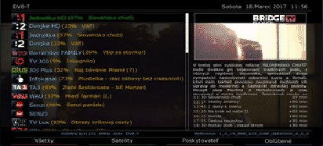

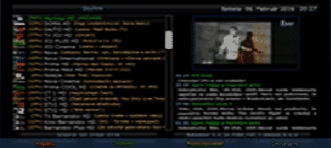

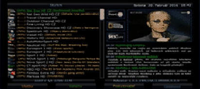

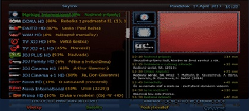

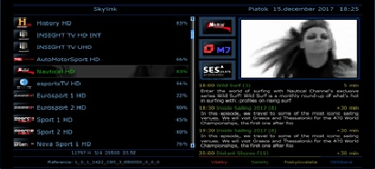

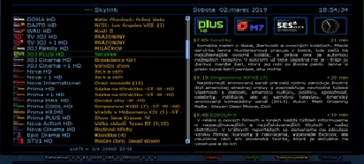


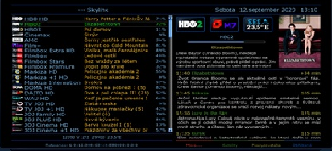

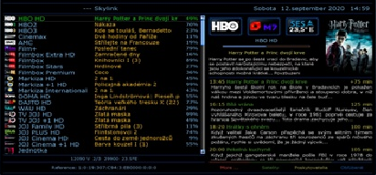


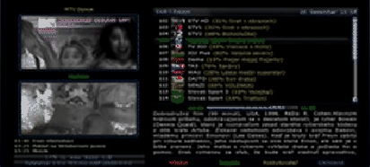

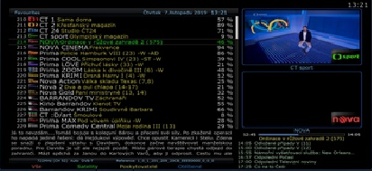

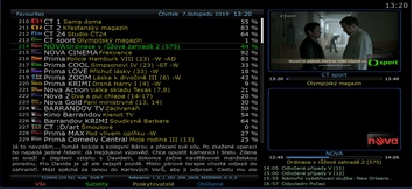

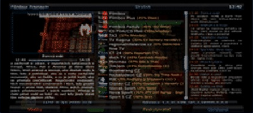


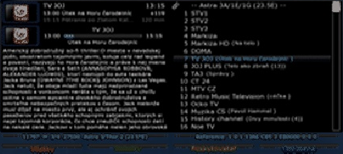

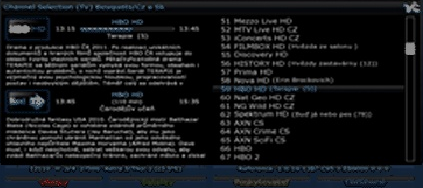


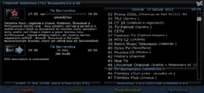

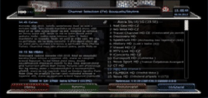


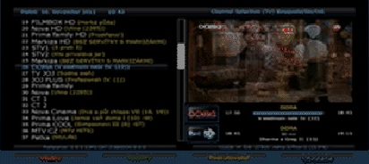


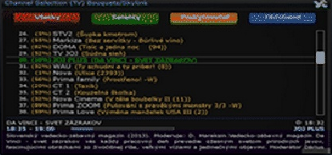

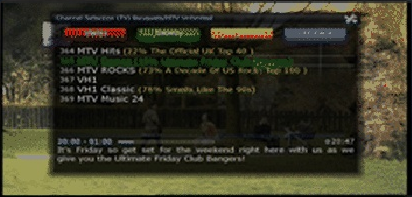

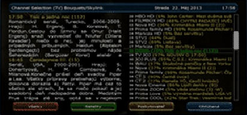

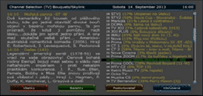


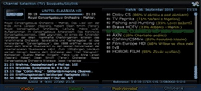

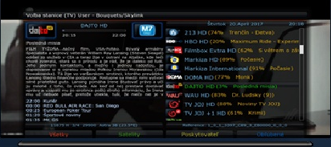

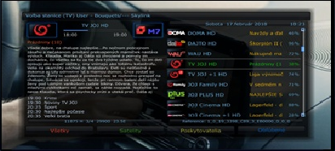


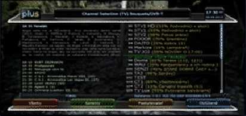


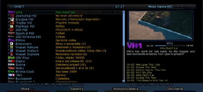


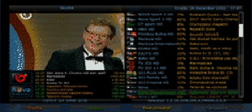

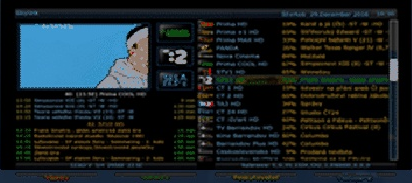

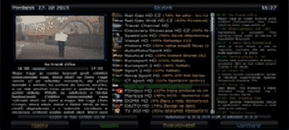


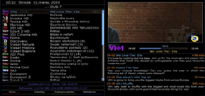

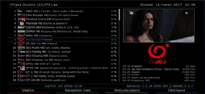